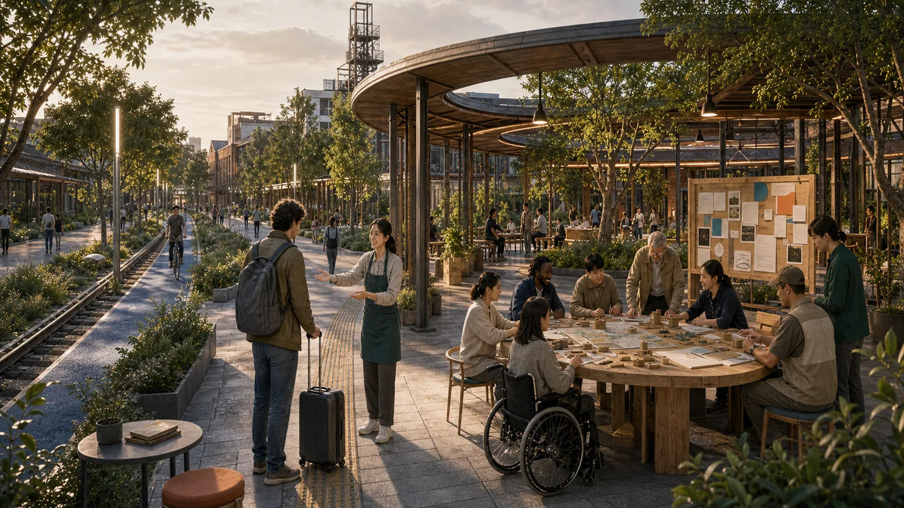
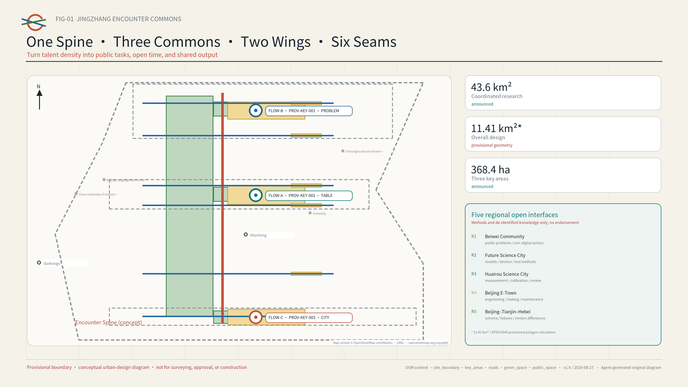
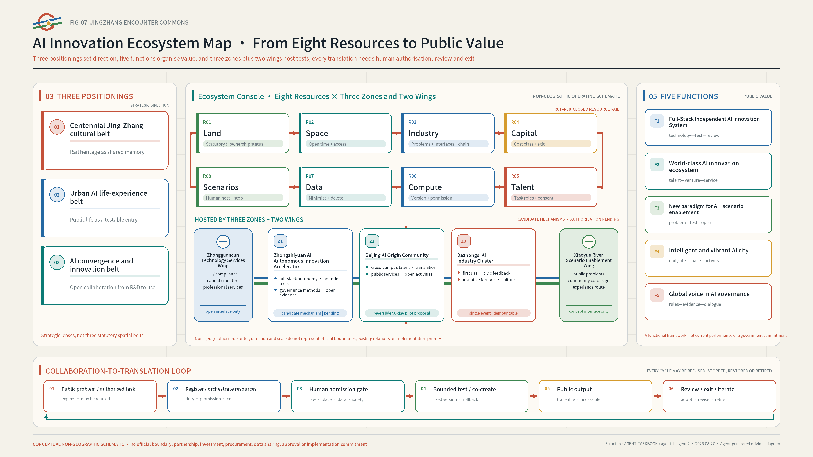
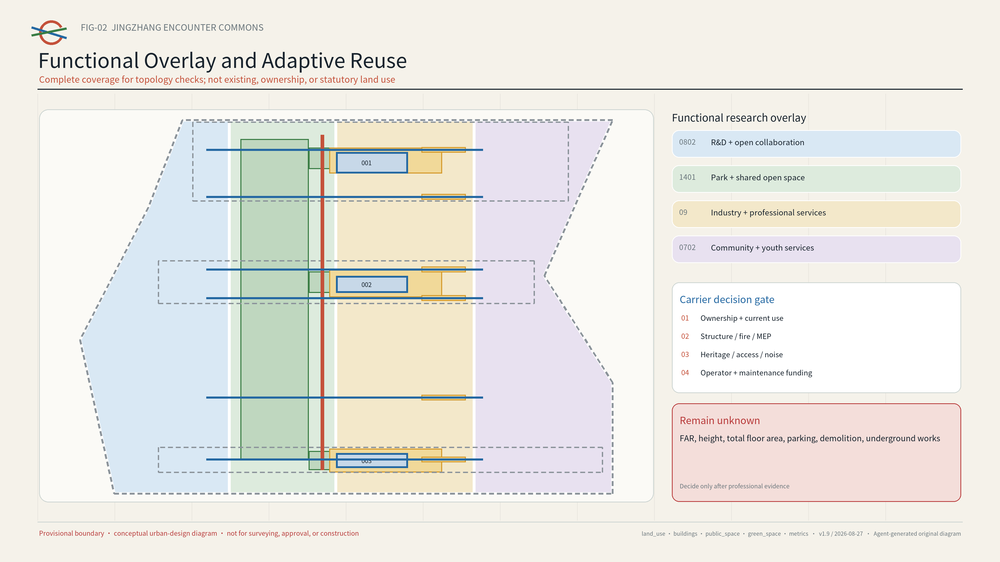
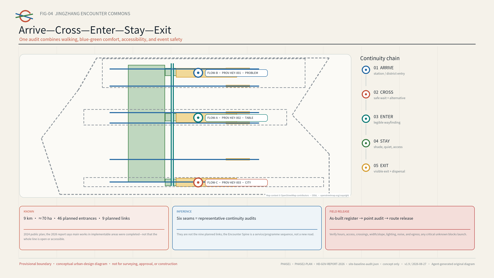
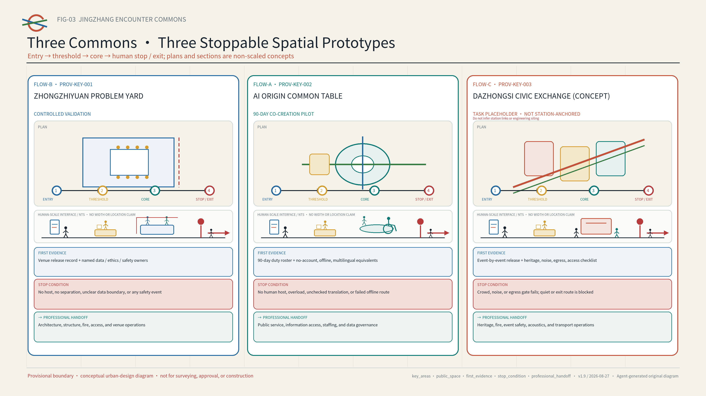
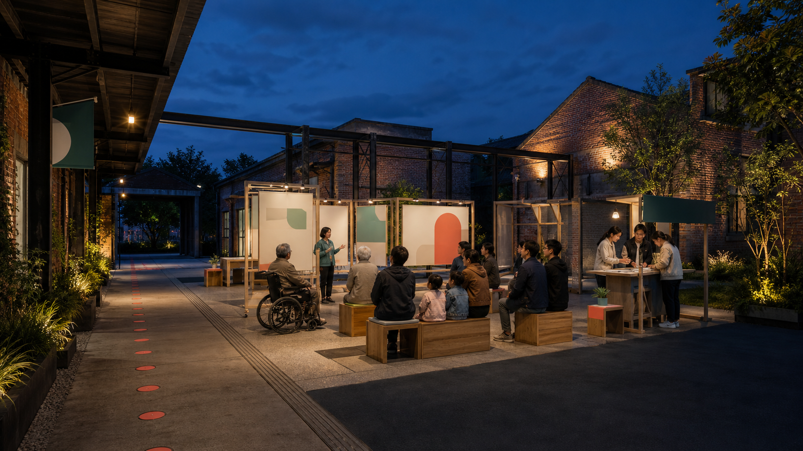
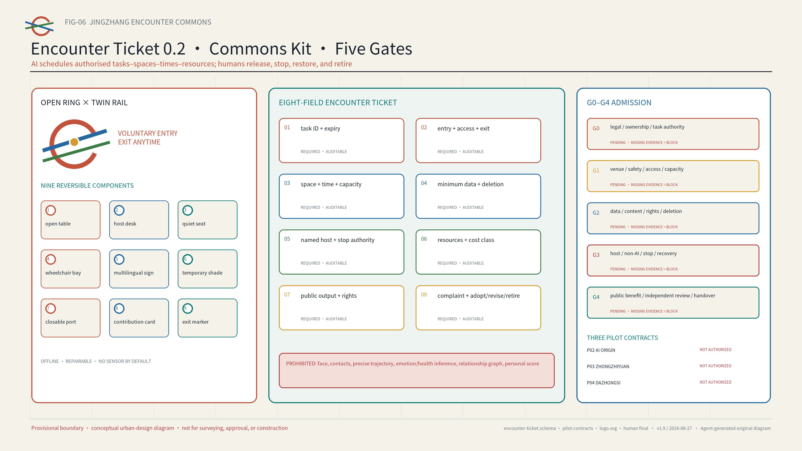
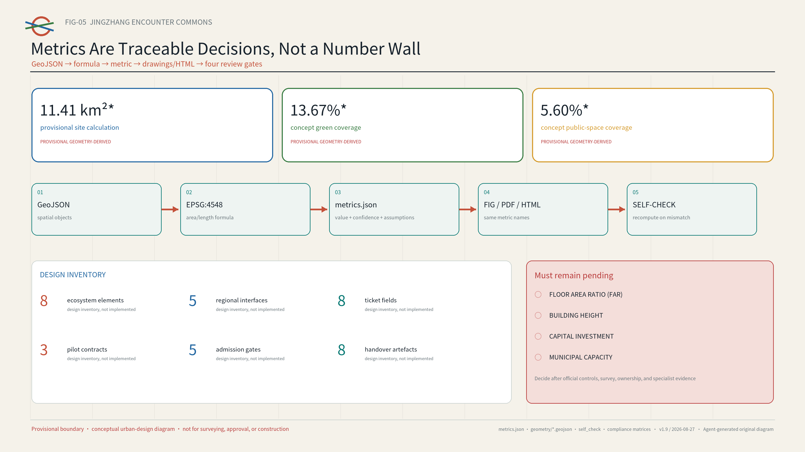

International newcomer Lin
A synthetic persona, not an interview. Lin makes arrival, participation and exit a human journey that can be checked.
Let a first-time visitor find a table, a human host and a clear way out—without an account or relationship disclosure.
Follow the synthetic newcomer “Lin”: complete one ninety-minute collaboration at AI Origin, then see how the same task moves through later stages on different days.

A synthetic persona, not an interview. Lin makes arrival, participation and exit a human journey that can be checked.
AI Origin frames the task; Zhongzhiyuan runs a stoppable test; Dazhongsi returns the result to the community.
Offline simulation covers valid paths and deliberate failures. People still decide whether a real site may open.

The coordinated level links regional innovation resources; the overall level organises public-space, service, and operating networks; the key-area level tests three repeatable prototypes. Five open interfaces share methods and de-identified knowledge only. They do not imply partnership, funding, procurement, or mutual recognition.
Three positionings define public value, five functions organise action, and eight resources enter Three Zones and Two Wings. Every translation requires human authorisation, review, and exit. Node order, direction, and scale form a non-geographic operating schematic—not an official boundary, existing partnership, investment, procurement, or approval.



The official report supports corridor-scale conditions only. Future changes to Line 13 are not current conditions; exact alignments and protection boundaries remain unknown.
The six seams check whether arrival, crossing, entry, stay, and exit form a continuous route. They are neither the nine planned links nor new roads. Any critical unknown leaves a break in the line.
All four roles complete the arrival-to-exit walk together and record an anonymised issue and stop list, repair owner, and recheck date. If any role lacks named acceptance—or if any critical unknown remains—the route is not released. See visual/assets/site-baseline-audit.json.


Student/young researcher · OPC founder · R&D engineer · resident/community group · international newcomer · frontline operator · access-first visitor
Follow physical bilingual signs; no scan and no account.
A bilingual staff member explains minimum-data requirements, the complaints process, and how to exit.
Choose from authorised tasks; AI recommendations can be refused.
Contribute on paper or by speaking; keep dissenting views visible.
Review the bilingual output; make a complaint or request deletion.
Create no persistent account; leave by a clearly marked route.
fixed synthetic fixture; evidence JSON; stop on overreach or rollback failure
dated sources; refusal; a critical error triggers transfer to staff
synthetic route and capacity; offline fallback; restoration receipt
public topic and equipment needs; expires in 30 days
no private-chat storage; mentor confirms
public-policy navigation, not legal advice
no diagnosis and no retained health record
ethics and safety review before launch
keep dissenting views; delete raw input
traceable sources; specialist sign-off
time and noise limits; stop immediately if needed
new permission and review for every edition


path, format, bilingual, hashes, package state
topology, containment, area and ratio recomputation
six figures, offline HTML, valid A3/A0
brief 1.3/1.4/1.5, agent.1–agent.6, standards and depth
All four repository-native gates must pass; submission-time output is authoritative.
FAR · HEIGHT · INVESTMENT · MUNICIPAL CAPACITY
Sources and assumptions. The official announcement, public Agent taskbook, Haidian government pages, and six primary-source cases are fully registered in sources.json. Official geometry, controls, ownership, heritage, transport and municipal evidence, and operating agreements remain pending. PROV-KEY-003 is not anchored to a station; see assumptions.json.
Map context. The low-contrast OSM-derived vectors are credited under the ODbL. They help with orientation only and are not official evidence; the page contains no third-party raster imagery, photographs, or trademarks.
AI-generated images. Three spatial-setting images were independently generated on 2026-08-09 from text-only prompts. The cover was regenerated on 2026-08-26 using only this proposal's own images as internal style references. No peer image or third-party photograph was supplied as direct input, and the tool did not expose a model ID. All AI imagery belongs to the presentation layer only and provides no evidence of site conditions, boundaries, ownership, approval, or built status. See AI-CONCEPT-VISUALS-20260809 and copyright_statement.md.